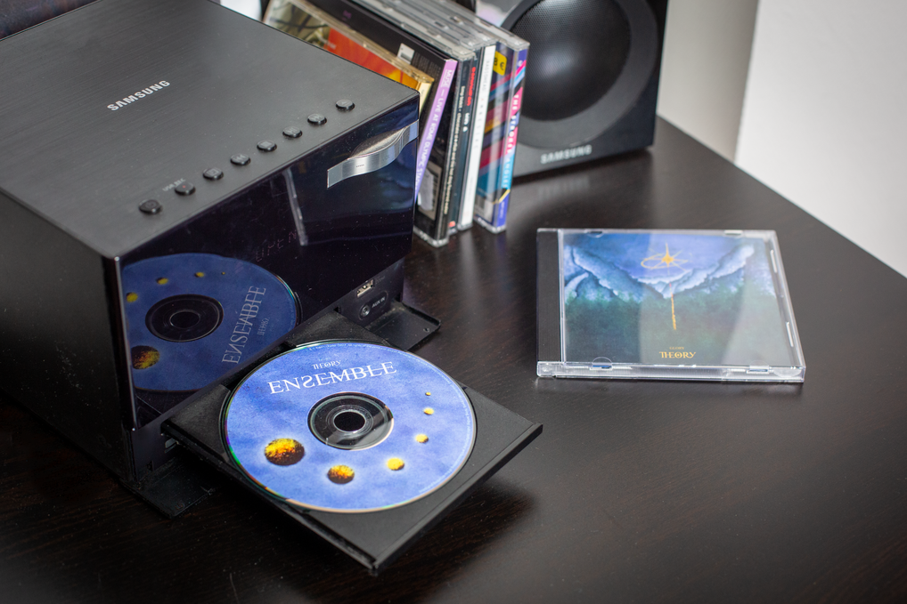
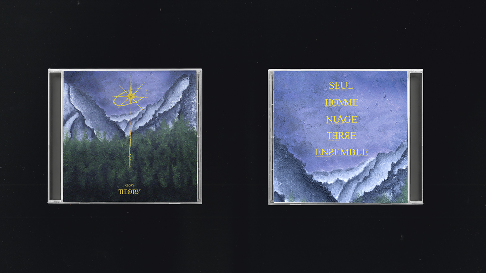
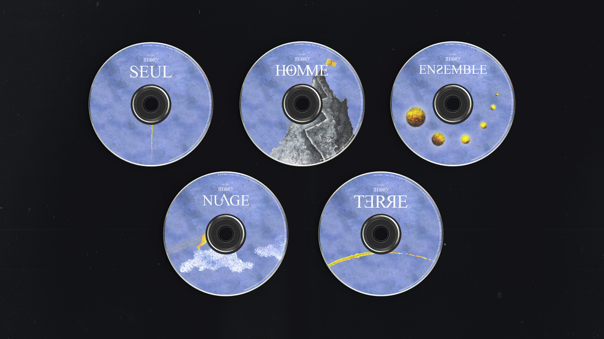
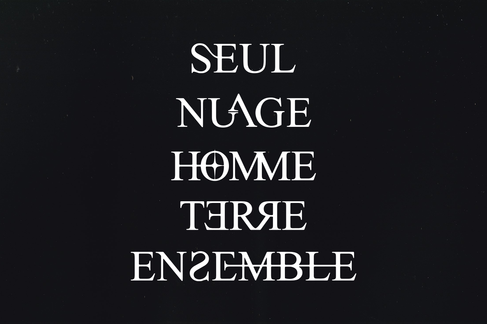

Glory theory
← retour
Création de l’identité visuelle de l’Ep «Glory theory».
L’objectif était de créer un univers flou et onirique pour métaphoriser le thème de l’espoir sous forme d’une réalité placée entre l’utopie et la dystopie. J’ai effectué un travail typographique pour chaque titre de musique afin de créer 5 versions différentes de CD distribuées de manière aléatoire.
   